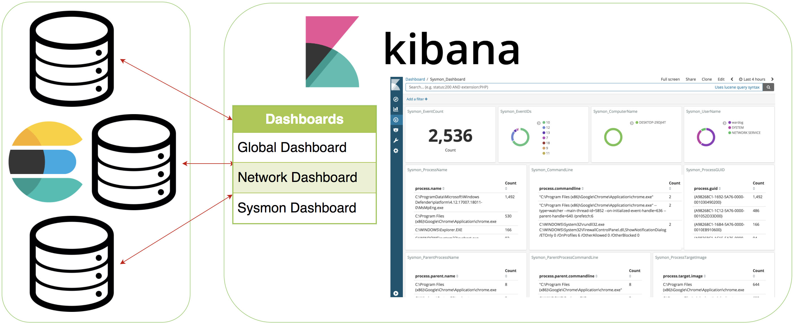
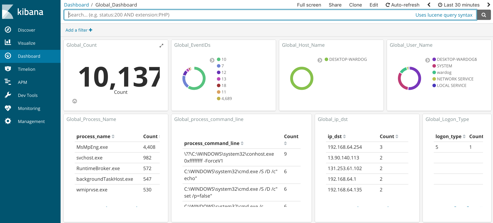
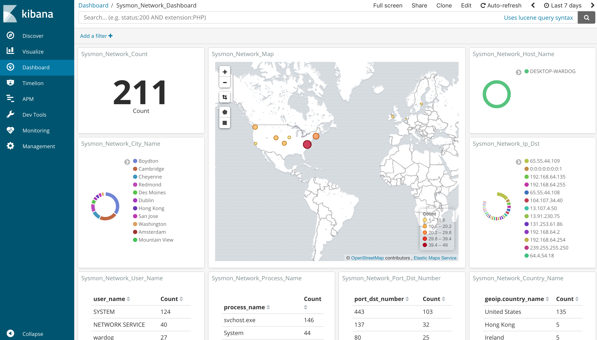

Kibana¶

Visualize your logs¶
Discover¶
Make sure you have logs being sent to your HELK first (At least Windows security and Sysmon events). Then, go to https://<HELK's IP> in your preferred browser. If you don’t see logs right away then update your time picker (in the top right) to include a farther back window. Additionally, if you just started sending logs then wait a minute and check again.
Currently, HELK creates automatically 7 index patterns for you and sets logs-endpoint-winevent-sysmon-* as your default one:
“logs-*”
“logs-endpoint-winevent-sysmon-*”
“logs-endpoint-winevent-security-*”
“logs-endpoint-winevent-application-*”
“logs-endpoint-winevent-system-*”
“logs-endpoint-winevent-powershell-*”
“logs-endpoint-winevent-wmiactivity-*”

Dashboards¶
Currently, the HELK comes with 3 dashboards:
Global_Dashboard¶
Network_Dashboard¶
Sysmon_Dashboard¶


Troubleshooting¶
Apart from running docker ps and docker logs --follow --tail 25 helk-kibana, additionally you can look at logs located at /usr/share/kibana/config/kibana_logs.log.
Example: docker exec helk-kibana tail -f /usr/share/kibana/config/kibana_logs.log
Many times Kibana will not be “working” because elasticsearch is still starting up or has ran into an error.